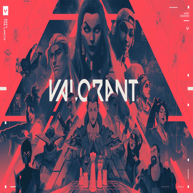

VALORANT 
{kind=link}
Valorant es un hero shooter en primera persona ambientado en un futuro próximo. Los jugadores asumen el control de agentes, personajes que provienen de una gran cantidad de países y culturas de todo el mundo. En el modo de juego principal, los jugadores se unen al equipo atacante o defensor con cada equipo que tiene cinco jugadores. Los agentes tienen habilidades únicas y usan un sistema económico para comprar sus habilidades y armas. El videojuego tiene una variedad de armas que incluyen pistolas, subfusiles, escopetas, ametralladoras, fusiles de asalto y fusiles de francotirador y makul. Cada arma tiene un patrón de retroceso que debe ser controlado por el jugador para poder disparar con precisión. El equipo atacante tiene una bomba, llamada Spike, que necesitan plantar en un sitio. Si el equipo atacante protege con éxito la Spike durante 40 segundos y detona, obtendrán un punto. Si el equipo defensor desactiva con éxito la Spike, o el temporizador de la ronda de 100 segundos expira, el equipo defensor obtiene un punto. Si se eliminan todos los miembros de un equipo, el equipo contrario gana un punto. Después de doce rondas, el equipo atacante cambia al equipo defensor y viceversa. El primer equipo en ganar 13 rondas gana la partida. Exceptuando el tiempo extra, donde deberás conseguir 2 victorias/rondas seguidas. En total, hay seis modos de juego: No Competitivo, Competitivo, Combate a Muerte, Fiebre De La Spike, Réplica y Carrera Armamentística También cuenta con un modo llamado personalizado en el cual se puede crear una partida con los ajustes que el jugador dese